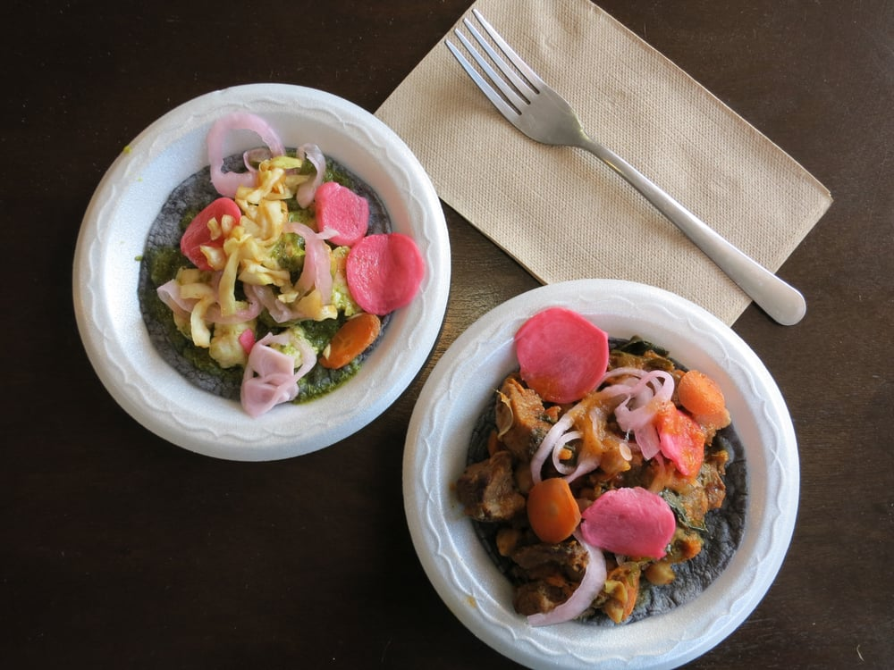
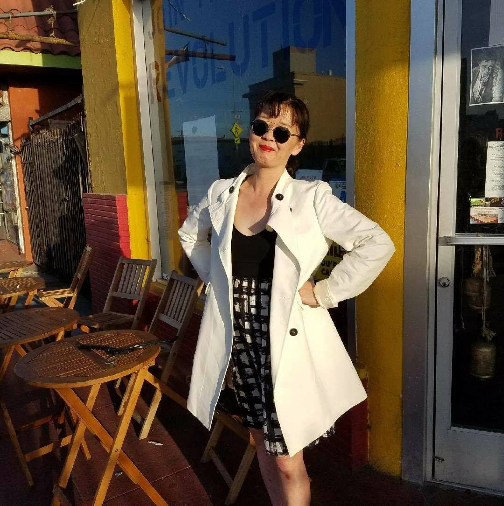
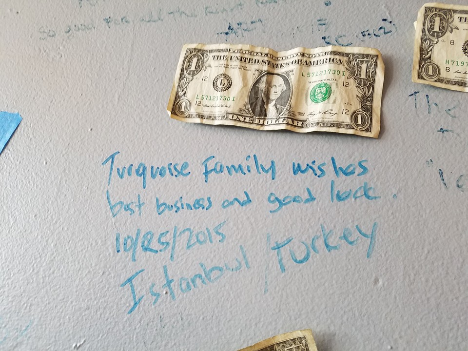
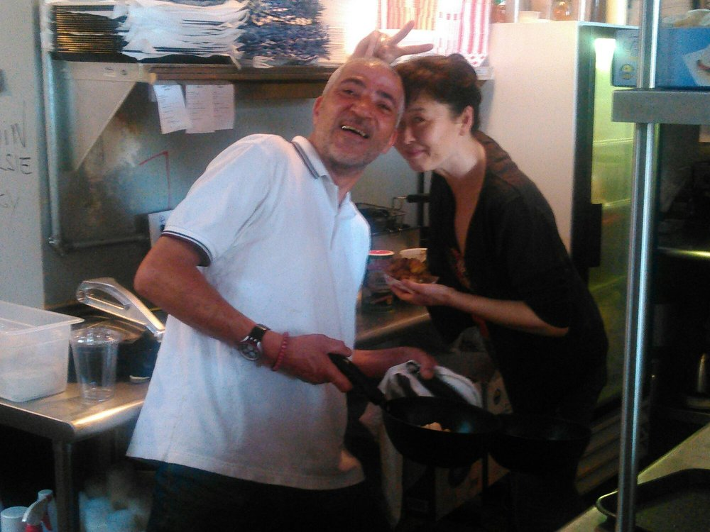

Two years ago married couple Farid Zadi and Susan Park’s restaurateur dreams came true. They had searched all over Los Angeles for months before finally finding the perfect location: a space just west of USC, where they could live above their fledgling business and share their passion for fusion cuisine with Angelenos.
“I was working one day and my wife called me saying, ‘I found a place and I just signed the lease. Give your two weeks’ notice and get over here.’ We invested all of our savings in opening the place,” Zadi said.
Longtime participants in the Los Angeles culinary scene, Zadi and Park were optimistic about their future as restaurant owners. They vowed to invest as much as they could in serving food in South Los Angeles — a community where new real estate developments are putting pressure on local residents — in their new place, Revolutionario.
They couldn’t have predicted how quickly the effects of gentrification would be felt in their own domain.
Trained in Southern France, French-Algerian chef Zadi had developed an eye for cross-cultural culinary connections. The street foods of Mexico and North Africa gave him plenty to work with.
“Mesquite-smoked lamb, black-eyed-pea falafel, handmade mixed-tamal tortillas and habanero harissa are just some of the ingredients we use here,” Zadi said.
North African tacos from Revolutionario. Trained in Southern France, French-Algerian chef Farid Zadi developed an eye for cross-cultural culinary connections. The street foods of Mexico and North Africa gave him plenty to work with. "Mesquite-smoked lamb, black-eyed-pea falafel, handmade mixed-tamal tortillas and habanero harissa are just some of the ingredients we use here," Zadi said. Photo Credit: Montana Ruderman
Zadi and Park, a published food historian and expert in French and North African cuisine, opened their own culinary school, Ecole de Cuisine Pasadena, in 2010. Determined to introduce North African tacos to the city, the couple opened Revolutionario in Exposition Park five years later. The restaurant’s fare quickly became popular among South Los Angeles residents, including nearby USC students. The community praise led to more widespread positive attention, even bringing them recognition from Condé Nast Traveler Magazine and other publications.
Everything seemed to be on the upswing for the couple’s new venture, and then, all of sudden it wasn’t. In just a little more than a year, the successful restaurant owners found themselves mired in a slew of leasing and rent-related issues and fighting to stay in the neighborhood.
“I am confident that there are other small businesses in the area struggling with the exact same issues,” Park said.
Late last year, the Exposition Park property that is home to both Revolutionario and the Zadi and Park family was sold to a developer. The couple said they started to worry about their future when the property managers seemingly offered no signs of working with the restaurant to remain open.
“We were put in the dark about information such as the name of the developer and the state of the transaction,” Park said.
Amid the chaos, the Revolutionario owners planned to close the fusion taqueria last July.
“You just kind of want to give up, but if you’re a resilient person you just can’t,” Park said.
Unsure if they'd be able to stay in their current location, the Revolutionario owners planned to close the fusion taqueria last July. "You just kind of want to give up, but if you’re a resilient person you just can’t," co-owner Susan Park said. Before completely losing hope, Park and chef Zadi reached out to the Inner City Law Center, a nonprofit legal firm that specializes in cases involving housing and homelessness among low-income families, for help. Photo courtesy of Susan Park
Before completely losing hope, Zadi and Park reached out to the Inner City Law Center, a nonprofit legal firm that specializes in cases involving housing and homelessness among low-income families, for help.
“We are committed to ensuring that the owners of Revolutionario and other tenants in the area are aware of their rights and receive proper representation,” a representative from Inner City Law Center said.
Pro bono attorneys helped Zadi and Park secure a two-year lease with the automatic right to renew, allowing Revolutionario to remain in the space, at least for the foreseeable future. While the Revolutionario team is excited to keep serving North African fusion dishes in South Los Angeles for a little longer, Park said they continue to battle a possible rent increase.
Revolutionario is in a building owned by Tommy and Rosalinda Roark of the Roark Family Trust, according to the Los Angeles County Office of the Assessor. The building owners did not respond to multiple calls and emails requesting an interview.
Zadi and Park represent just two of many South LA residents facing similar issues because of rising gentrification.
The West Adams neighborhood nearby has also become increasingly popular with developers. The price of a home in the area grew more than 22 percent in 2016 from a year earlier, according to a study from the real estate website Redfin. The research found that West Adams maintains some of the highest house-flipping rates in the country.
Community groups fear that new construction projects will further increase rents and drive out more residents and business owners who have lived and operated in South Los Angeles for decades.
The Golden State Environmental Justice Alliance and SAJE, two nonprofit groups in the area, took the Los Angeles City Council to court last year to block a $1.2 billion development in Historic South Central. In separate complaints the groups alleged that the mixed-use project would lead to more expensive housing and displacement.

“The city needs to advocate for small-business owners and tenants in rent-controlled buildings,”
— Susan Park, entrepreneur
USC Village opened in University Park at the end of the summer. The $700 million project, spanning 15 acres, is the largest development in the school’s history.
A State of the Neighborhood Report conducted by USC found that the number of families facing economic and health issues in the surrounding area has increased since 2000, even as the population unaffiliated with the university has decreased due to displacement. The rate of families in poverty in the area has risen by more than 11 percent, according to the report.
Fastened along the walls of Revolutionario are dollar bills and messages from customers who hope to see Zadi and Park stay in Exposition Park indefinitely.
“People forget that food can heal your soul, and here, at Revolutionario, they feed to heal,” a fan scribbled on the wall. Another pinned-up note of support reads, “Power to Revolutionario! The world needs more places like this.”
Fastened along the walls of Revolutionario are dollar bills and messages from fans of Zadi and Park's restaurant. Photo Credit: Montana Ruderman
Michael Cassutt, a USC student and Revolutionario regular, is worried that the restaurant will be forced to leave after the lease expires.
“Revolutionario offers such a unique culinary experience,” he said. “I’m very sad about the prospect of it leaving and I really hope it stays.”
For now, Cassutt has nothing to fear. The restaurant owners are intent on staying exactly where they are.
“We love USC and the South Los Angeles community,” Zadi said. “They have always supported us.”
Jennifer Smart, a student and resident of South Los Angeles, said owners Zadi and Park have embedded themselves in the community, bringing more business to Exposition Park.
“It’s an institution,” she said. “We as a community will do whatever it takes to keep them here.”
In June of last year, Councilman Marqueece Harris-Dawson, who represents the Los Angeles City Council District 8 of western South Los Angeles, recognized Revolutionario as an immigrant-owned business that helps serve the community.
These days Park and Zadi are working toward a new dream. They hope one day to purchase the entire building where they and their business live.
“This is our home,” Zadi said. “We want to stay here for as long as possible.”
The Revolutionario owners in the kitchen of their North African taqueria. These days Park and Zadi are working toward a new dream. They hope one day to purchase the entire building where they and their business live. "This is our home," Zadi said. "We want to stay here for as long as possible." Photo courtesy of Farid Zadi